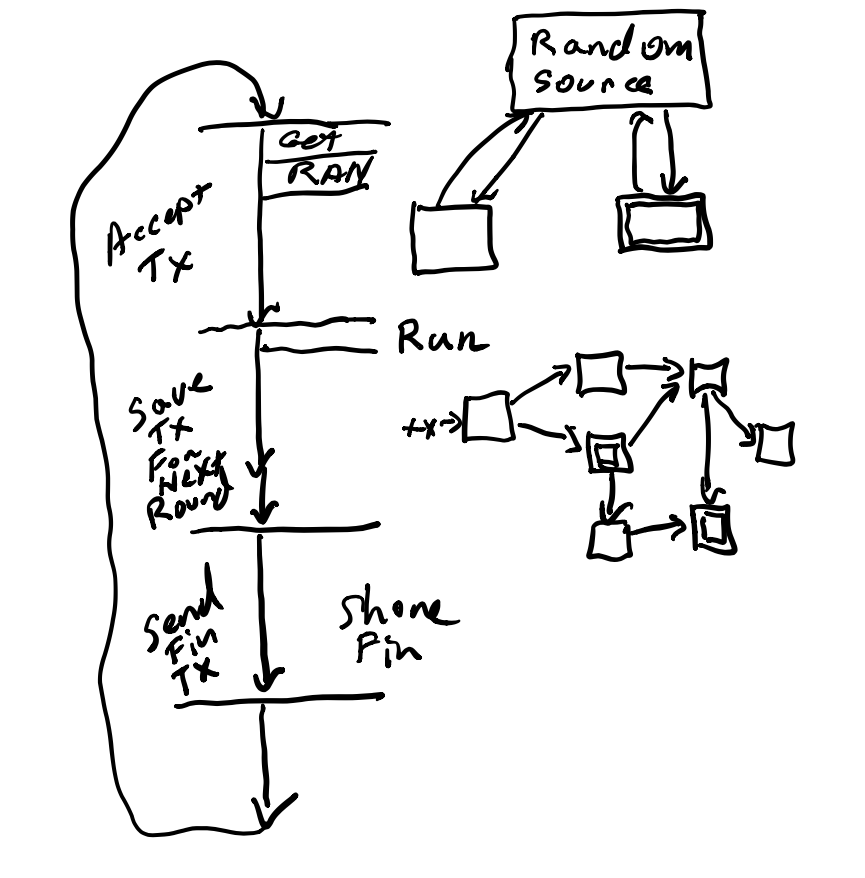
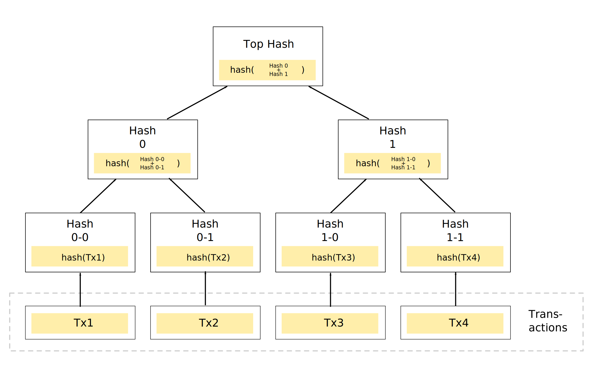

<!--

Copyrigyht (C) University of Wyoming, 2021.
By Prof Philip Schlump.

=========================================================================

-->


<link href="https://vjs.zencdn.net/7.10.2/video-js.css" rel="stylesheet" />
<!-- If you'd like to support IE8 (for Video.js versions prior to v7) -->
<script src="https://vjs.zencdn.net/ie8/1.1.2/videojs-ie8.min.js"></script>
<style>
.video-js {
	width: 100%;
	height: 678px;
}
</style>


<!-- This is the first slide -->

<section>
    <h2 style="padding-top:80px;" >  Building Blockchain inside PostgreSQL </h2>
	<div style="width:100%">
		
	</div>
    <footer>
			PostgreSQL International Conference <br>
			Prof. Philip Schlump <br>
           University of Wyoming <br>
           Department of Computer Science <br>
		   Tue Apr 20, 2021 <br>
	 </footer>
</section>

<!-- 2 -->
<section>
	<p>
		<ol>
			<li> Overview </li>
			<li> What is a blockchian. </li>
			<li> An approach Simple Signed proof of Immutable Data </li>
			<li> Proof of Signature. </li>
			<li> Shared Data (multi-node). </li>
			<li> Where our current efforts are at. </li>
		<ol>
	</p>
</section>


<!-- 3 -->
<section>
	<h3> Overview : What is a Blockchain </h3>
		<ul>
			<li> What is a blockchain? </li>
			<li> All the hype </li>
			<li> Underling system below cryptocurrencies </li>
			<li> Used for the transfer of assets: NFTs </li>
			<li> What can it really do? </li>
		</ul>
</section>

<!-- 4 -->
<section>
	<h3> Overview : Useful Features of Blockchain </h3>
		<ul>
			<li> Immutable Data </li>
			<li> Shared Data </li>
		</ul>
</section>

<!-- 5 -->
<section>
	<h3> Overview : Kinds of Blockchains </h3>
		<ul>
			<li> Private </li>
			<li> Permissioned </li>
			<li> Public </li>
		</ul>
</section>

<!-- 6 -->
<section>
	<h3> Overview : Consensus </h3>
		<ul>
			<li> 1st Generation Consensus: Proof of Work Bitcoin, Eth v.1.x </li>
			<li> 2nd Gen. Proof of Stake: Cardano., Eth v.2.x </li>
			<li> 2nd Gen. Proof of Authority: This presentation today </li>
			<li> 3rd Gen. Honey-Badger BFT, Difinity (Berkley) </li>
		</ul>
</section>

<!-- 7 -->
<section>
	<h3> Overview : Why a Blockchain Matters </h3>
		<ul>
			<li> Secure Transfer of Tokens and Ownership </li>
			<li> Strong Authentication </li>
		</ul>
</section>

<!-- =========================================================== Approach 1 =========================================================== -->

<!-- 8 -->
<section>
	<h3> An Approach: Requirements (single node) </h3>
		<ul>
			<li> Post data </li>
			<li> Immutable Data </li>
			<li> Triggers + Hash </li>
		</ul>
</section>

<!-- 9 -->
<!-- code at this point - Trigger / Table / pub-sub / Go -->
<section>
<pre style="font-size:14px;">
 1: CREATE TABLE bk_block (
 2:     id                uuid DEFAULT uuid_generate_v4() not null
                             primary key,
 3:     seq               serial not null,
 4:     data              text not null,
 5:     hash_of_this      text not null,
 6:     prev_block_hash   text default '*' not null,
 7:     prev_block_id     uuid not null,
 8:     created           timestamp default current_timestamp not null
 9: );
10: 
11: create unique index bk_block_u1 on bk_block ( hash_of_this );
12: create index bk_block_p1 on bk_block ( created );
13: create index bk_block_p2 on bk_block ( prev_block_id );
14: create index bk_block_p3 on bk_block ( prev_block_hash );
</pre>
</section>

<!-- 10 -->
<section>
<pre style="font-size:14px;">
 1: CREATE OR REPLACE FUNCTION bk_block_tg() RETURNS trigger AS $$
 2: DECLARE
 3:    l_seq_id bigint;
 4:    l_id text;
 5:    l_hash text;
 6: BEGIN
 7:     IF tg_op = 'UPDATE' or tg_op = 'DELETE' THEN
 8:       RAISE EXCEPTION 'Can not UPDATE or DELETE from '
              USING ERRCODE='20808';
 9:         RETURN NULL;   -- Prevent All Updtes/Deletes
10:     ELSIF tg_op = 'INSERT' THEN
11:       NEW.hash_of_this = digest(CONCAT(NEW.data,
             NEW.prev_block_hash,NEW.hash_of_this,
             (NEW.prev_block_id::text)), 'sha256');
12:       IF new.id = 'e9d963e1-d2a2-4e35-8c37-22742008bce4'::uuid
13:          and NEW.data = 'genesis row' THEN
14:          NEW.prev_block_hash = NEW.hash_of_this;
15:          NEW.prev_block_id = NEW.id;
16:       ELSE
17:          select  "id", "hash_of_this" into l_id, l_hash
18:             from "bk_block"
19:             where "seq" in (
20:                select max("seq") from "bk_block"
21:             ) ;
22:          NEW.prev_block_id = l_id;
23:          NEW.prev_block_hash = l_hash;
24:       END IF;
25:       RETURN NEW;
26:     END IF;
27: END;
28: $$ LANGUAGE plpgsql;
29: 
30: CREATE TRIGGER bk_block_trigger
31:    BEFORE INSERT OR UPDATE OR DELETE ON bk_block
32:    FOR EACH ROW EXECUTE PROCEDURE bk_block_tg();
</pre>
</section>

<!-- 11 -->
<!-- code at this point - Trigger / Table / pub-sub / Go -->
<section>
<pre style="font-size:14px;">
 1: CREATE OR REPLACE FUNCTION send_notify_after_trig()
 2: RETURNS TRIGGER AS $body$
 3: declare
 4:   msg text;
 5: begin
 6:   msg = '{"Cmd":"LogEvent","Hash":'||to_json(NEW.hash_of_this)||'}';
 7:   PERFORM pg_notify('events',msg);
 8:   return NEW;
 9: end;
10: $body$ LANGUAGE plpgsql;
11: 
12: CREATE TRIGGER send_notify_after_tg
13: AFTER INSERT ON bk_block
14:     FOR EACH ROW EXECUTE PROCEDURE send_notify_after_trig();
</pre>
</section>

<!-- 13 -->
<section>
<pre style="font-size:14px;">
...
 1: listenForEventToOccure := func(l *pq.Listener) {
 2:   nth := 0
 3:   period := 50
 4:   for {
 5:     select {
 6:     case n := &lt;-l.Notify:
 7:       nth++
 9:       var pd PgData
10:       err := json.Unmarshal([]byte(n.Extra), &and;pd)
11:       if err != nil {
12:         fmt.Printf("err %s data [%s]\n", err, pd)
13:       }
14:       if (nth % period) == 0 {
15:          tx, err := ethLogEvent.IndexedEvent(gCfg.LogAddress, pd.Hash)
16:          if err != nil {
17:             fmt.Printf("err %s data -[%s]-\n", err, pd.Hash)
19:          } else {
19:             fmt.Printf("Success Tx: %s\n", godebug.SVarI(tx))
20:          }
21:       }
22:       fmt.Printf("%+v\n", pd)
23:     case &lt;-time.After(60 * time.Second):
24:       nth++
25:       fmt.Printf("No data received after 1 min, verify db. conn.\n")
26:       go func() {
27:         l.Ping()
29:       }()
29:     }
30:   }
31: }
32: 
33: pgConn := pq.NewListener(pgConnectString, 1*time.Second,
      time.Minute, logError)
34: err = pgConn.Listen("events")
...
</pre>
</section>

<!-- 14 -->
<section>
<pre style="font-size:14px;">
 1: // SPDX-License-Identifier: MIT
 2: pragma solidity &gt;=0.6.0 &lt;=0.9.0;
 3: 
 4: contract InsLogEvent {
 5:   address payable owner;
 6:   event AnEvent ( address indexed account, string msg );
 7: 
 8:   constructor() {
 9:     owner = payable(msg.sender);
10:   }
11: 
12:   modifier onlyOwner() {
13:     require( msg.sender == owner, "Sender not authorized.");
14:     _;
15:   }
16: 
17:   function IndexedEvent ( address _acct, string memory _msg )
18:     public returns ( bool )
19:   {
20:     emit AnEvent ( _acct, _msg );
21:     return (true);
22:   }
23: }
</pre>
</section>

<!-- 15 -->
<section>
<pre style="font-size:14px;">
 1: create table c_inventory_item (
 2:    id          uuid DEFAULT uuid_generate_v4() not null primary key,
 3:    item_id     text not null ,
 4:    item_count  int default 1 not null ,
 5:    user_id     uuid not null ,
 6:    created     timestamp default current_timestamp not null
 7: );
 8: 
 9: CREATE OR REPLACE FUNCTION notify_for_inventory_item()
10: RETURNS TRIGGER AS $$
11: declare
12:    msg text;
13: begin
14:    insert into bk_block ( data ) values ( row_to_json(NEW) );
15:    return NEW;
16: end;
17: $$ LANGUAGE plpgsql;
18: 
19: CREATE TRIGGER imutable_inventory_item_imutable
20: AFTER INSERT ON c_inventory_item
21:     FOR EACH ROW EXECUTE PROCEDURE notify_for_inventory_item();
22: 
23: CREATE OR REPLACE FUNCTION imutable_data()
24: RETURNS TRIGGER AS $$
25: begin
26:    return NULL;
27: end;
28: $$ LANGUAGE plpgsql;
29: 
30: CREATE TRIGGER notify_inventory_item_imutable
31: AFTER DELETE or UPDATE ON c_inventory_item
32:     FOR EACH ROW EXECUTE PROCEDURE imutable_data();
</pre>
</section>

<!-- 16 -->
<section>
	<h3> An Approach: Uses </h3>
	<ul>
		<li> Parole System </li>
		<li> ISO 9002 Documents </li>
		<li> Logging Files </li>
	</ul>
</section>

<!-- 17 -->
<section>
	<h3> An Approach: Why </h3>
	<ul>
		<li> Cost </li>
		<li> Throughput </li>
	</ul>
</section>


<!-- 18 -->
<section>
	<h3> An Approach: Better Proof </h3>
	<ul>
		<li> More Secure "hash"/"signature" </li>
		<li> Send to Secure Storage (Eth) </li>
	</ul>
</section>


<!-- =========================================================== Approach 2 =========================================================== -->

<!-- 19 -->
<section>
	<h3> Approach 2: Networked Nodes </h3>
	<ul>
		<li> Distributed Data </li>
		<li> Peru Mine </li>
		<li> Food Tracking </li>
	</ul>
</section>

<!-- 20 -->
<section>
	<h3> Approach 2: What is missing from PG </h3>
	<ul>
		<li> Sign/Verify </li>
		<li> P2P Communication </li>
		<li> HTTP(s) Server </li>
	</ul>
</section>

<!-- 21 -->
<section>
	<h3> Approach 2: Transactions </h3>
	<ul>
		<li> Berkley's Definity - 9 nodes </li>
		<li> Consensus 16 nodes picked randomly </li>
		<li> Consensus at (16/2) + 1 == 8+1 == 9 </li>
		<li> Phase 0 - Start Block </li>
		<li> Phase 1 - Share Transactions (P2P) </li>
		<li> Phase 2 - Pick set to run : Consensus </li>
		<li> Phase 3 - run set </li>
		<li> Phase 4 - Share end-block (P2P) Consensus </li>
	</ul>
</section>

<!-- https://lucid.app/lucidchart/02b34f19-9778-441b-94ac-05cc14231a27/edit?beaconFlowId=F8CA59A90B8E9624&page=0_0# -->
<!-- 22 -->
<section>
	<h3> An Approach: Model </h3>
	
</section>

<!-- 23 -->
<section>
<pre style="font-size:14px;">
 1: CREATE OR REPLACE FUNCTION bc_data_tg()
		RETURNS trigger AS $$
 2: DECLARE
 3:    l_seq_id bigint;
 4:    l_id text;
 5:    l_hash text;
 6: BEGIN
 7:     IF tg_op = 'UPDATE' or tg_op = 'DELETE' THEN
 8:       RAISE EXCEPTION 'Can not UPDATE or DELETE from '
			USING ERRCODE='20808';
 9:         RETURN NULL;   -- Prevent All Updtes/Deletes
10:     END IF;
11:     IF tg_op = 'INSERT' THEN
12:       NEW.hash_of_this = digest(NEW.data||<span class="red">NEW.merkle_hash</span>
			||NEW.prev_block_hash||(NEW.prev_block_id::text), 'sha256');
13:       IF new.id = 'e9d963e1-d2a2-4e35-8c37-22742008bce4'::uuid 
14:          and NEW.data = 'genesis row' THEN
15:          NEW.prev_block_hash = NEW.hash_of_this;
16:          NEW.prev_block_id = NEW.id;
17:       ELSE
18:          select  "id", "hash_of_this" into l_id, l_hash
19:             from "bc_block"
20:             where "seq" in ( 
21:                select max("seq") from "bc_block"
22:             ) ;
23:          NEW.prev_block_id = l_id;
24:          NEW.prev_block_hash = l_hash;
25:       END IF;
26:         RETURN NEW;
27:     END IF;
28: END;
29: $$ LANGUAGE plpgsql;
30: 
31: CREATE TRIGGER bc_data_trigger
32:    BEFORE INSERT OR UPDATE OR DELETE ON bc_block 
33:    FOR EACH ROW EXECUTE PROCEDURE bc_data_tg();
</pre>
</section>

<!-- 24 - Go Server -->
<!-- 24 -->
<section>
	<h3> Sending A Transaction </h3>
	<ul>
		<li> Send From, To, Amount, Signature, Memo </li>
	</ul>
	<pre style="font-size:14px;">
wget -o 'o1' -O 'o2' 'http://localhost:5001/api/v1/submit-tx?
	from=0x7e3aFEc048bC7be745d0fA0F5af97D3978C40E9A&\
	to=0x9d41e5938767466af28865e1c33071f1561d57a8&\
	sign=0x797a53a6886c5e0cd8e69e3ce43a041db49b86a403dcb3f751829eecd0cd48a41a41a7412cc61d58284bcec191ab4061e6f3de0a28fd71433da5367fac793d7e00&\
	memo=aMemo'

	</pre>
</section>

<!-- 25 -->
<section>
	<h3> P2P sharing/consensus </h3>
	<ul>
		<li> Transactions just get Shared </li>
		<li> Each nodes use a random assignment </li>
		<li> If assigned they wait for 9 of 16 to agree </li>
		<li> Then Run the Transactions </li>
	</ul>
</section>

<!-- 25 -->
<section>
	<h3> Processing Cycle </h3>
	
</section>


<!-- 26 - Merkle Trees -->
<section>
	<h3> Merkle Trees  </h3>
	
</section>


<!-- 27 -->
<section>
	<h3> Summary of This Approach </h3>
	<ul>
		<li> 30x systems (10 local) </li>
		<li> 20x5 = $100 a month </li>
		<li> Latency about 10sec </li>
		<li> Throughput about 40 TPS </li>
	</ul>
</section>


<!-- 28 -->
<section>
	<h3> Total Code </h3>
	<ul>
		<li> Overall less than 1500 lines of code </li>
		<li> Thanks to lots of good work go/libp2p </li>
		<li> Reasonably complicated code </li>
	</ul>
</section>


<!-- =========================================================== Conclustion  =========================================================== -->

<!-- 0 -->
<section>
	<h3> Conclusion </h3>
	<ul>
		<li> Important to determine features that you need </li>
		<li> Cost of Transactions / Latency / Throughout </li>
		<li> Distributed Computing has Alternates </li>
	</ul>
</section>


<!-- =========================================================== Conclusion  =========================================================== -->

<!-- 0 done -->
<section>
	<h3> Future Directions </h3>
    <p>
		<ul>
			<li> Implement a shared random-number system </li>
			<li> Implement protected data for contracts </li>
		</ul>
	</p>
</section>


<section>
	<h3> References </h3>
	<p style="font-size:10px;">
		<a href="https://github.com/Univ-Wyo-Education/postgresql-conference-apr20">Software at: https://github.com/Univ-Wyo-Education/postgresql-conference-apr20 </a><br>
	</p>
</section>


